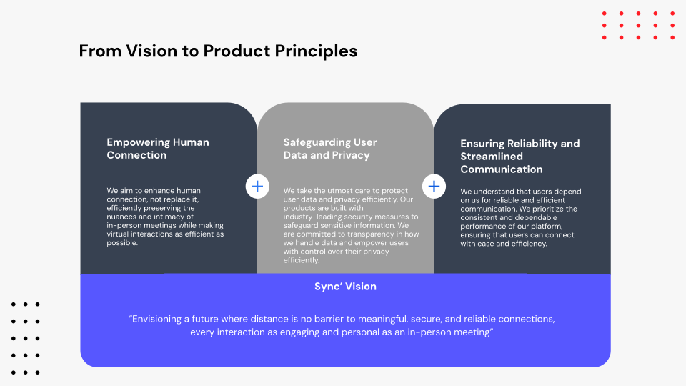
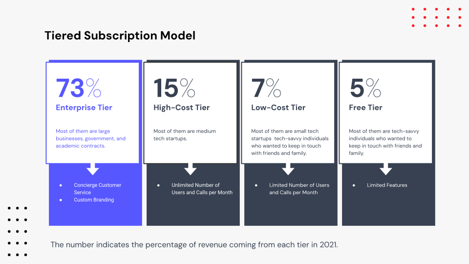
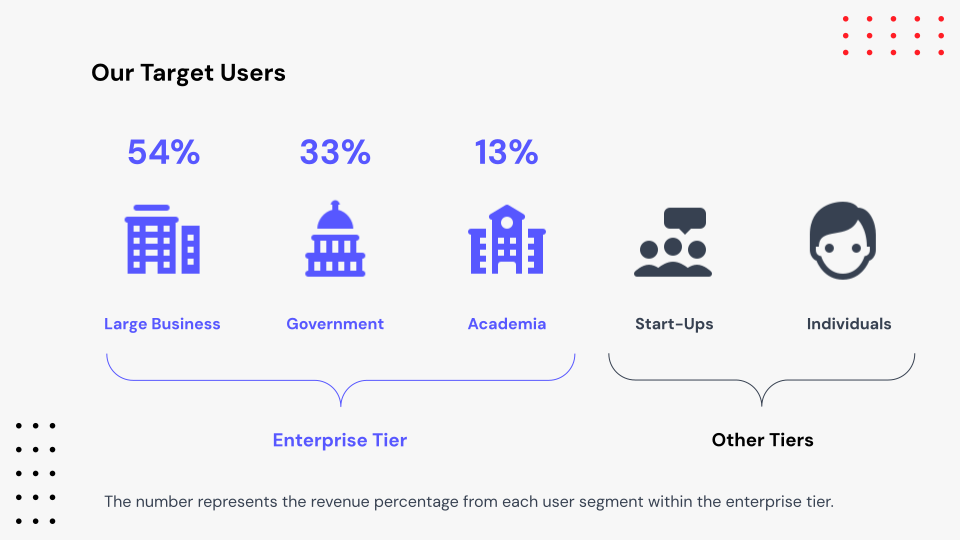
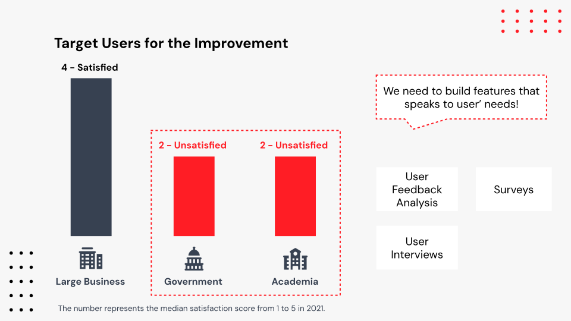
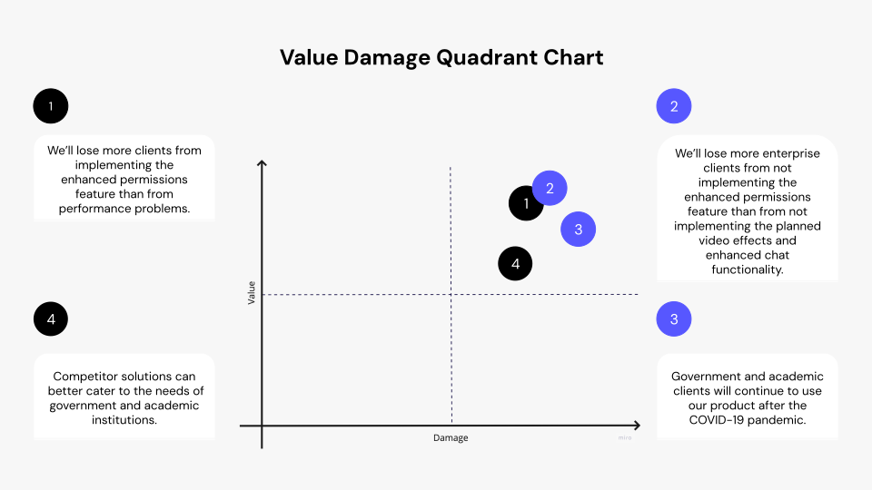

#ProductManagement#B2B
Sync is a versatile video conferencing software compatible across all browsers and supported by dedicated native applications for desktop (Windows, Apple) and mobile (iOS, Android) platforms.
Primarily tailored for B2B clients, Sync is designed to cater to a diverse user base. Our central mission is to address the specific needs of government and academic users while minimizing the impact on technical debt.
This project is the highlight of my Product Management Bootcamp at CareerFoundry.
It revolves around "Sync," a made-up B2B company creating video conferencing software. The issues about technical debt have been raised due to the increase of users after the COVID-19 lockdown. In this project, I’ll apply product management principles to implement a new feature that satisfies user and business needs with the necessary performance and support. It's a hands-on learning opportunity where I tackle real-world challenges, helping me practically fine-tune my product management skills.
To launch a product to effectively scale the backend infrastructure to support a large user base by balancing the development of new features with necessary upgrades prompted by a sudden increase in users as a product manager.
4 months project for the Product Management Immersion Course
Understanding the company's vision is crucial for addressing product challenges. Aligning product principles with this vision serves as a foundational blueprint for development. In Sync, we prioritize enhancing human connection, safeguarding user data, and ensuring reliable communication. These principles underscore our unwavering commitment to a user-centric product that aligns seamlessly with the company's broader objectives.
Subsequently, it is crucial to comprehend the product's monetization strategies, specifically, how the product generates revenue. In the case of Sync, we opted for a Tiered subscription model to capitalize on its scalability and flexibility. This model was chosen for its ability to cater to diverse user needs while ensuring sustainable revenue growth. Notably, starting from 2021, our primary focus is on enterprise users, predominantly within the age range of 25 to 60.
For Sync's product, featuring five distinct user personas, the enterprise tier, our primary revenue source, sees the largest contribution from large business users.
To pinpoint target users for improvement, it's evident that government and academic users exhibit lower dissatisfaction compared to their counterparts in large businesses.
After understanding the user's pinpoints by user research, we need to host a kick-off meeting to align on the problem statement.
We utilized the Value Damage Quadrant Chart to establish our research priorities, leading us to prioritize assumptions 2 and 3. These assumptions subsequently informed the creation of a research plan, complete with timelines.
After the research, we have collected some data. From comparing two key client groups - companies and academic/government clients, we have discovered the following insights:
After confirming the impact of government and academic user satisfaction on revenue, we utilized our research findings to develop personas, aiding a deeper comprehension of user needs.
We conducted a brainwriting ideation session to tackle specific issues, encompassing two topics and involving six related questions. Following the session, we utilized dot voting to identify the most popular ideas and utilized a scoreboard to further prioritize and refine the solutions.
To enhance solution definition, we've incorporated a functional requirement and presented our team-defined solution to the executives to secure their buy-in.
After defining the solution, we designed prototypes and conducted a focused usability test involving 5 users. The primary goal was to assess the efficiency of the automatic meeting lock feature in streamlining administrative tasks for both admin users and moderators, aiming to reduce the time and effort spent on participant management by 5-10%. Detailed results from the test have been meticulously logged in a Google Sheet for comprehensive analysis and review.
You can find the test plan detailed here. The results are logged in a Google Sheet.
From the last round of usability tests, we found that the “add” button is not intuitive for users to manage the latecomers, such as admitting and rejecting users. Therefore, we proposed to redesign the user flow to manage the latecomers. We recruited 6 new users and conducted an A/B test on three small tasks to evaluate two prototypes.
The results are logged in the Google Sheet.
After conducting tests, we've opted to create an MVP to thoroughly validate our concepts. I've updated the pertinent information in the Product Requirements Document.
Additionally, in preparation for the upcoming development phase, I've organized the backlog for the next sprint.
To ensure a successful product launch, we've developed a comprehensive product launch plan that aligns seamlessly with all teams involved.
Understanding what to validate in user research is pivotal. It directs efforts towards critical areas, shaping the product's success by aligning insights with user needs.
Launching a product involves multiple teams working cohesively. Effective coordination and alignment across functions ensure a seamless and successful launch.
Breaking down user stories into incremental steps aids in accurate effort estimation. This approach fosters smoother development cycles, enabling better planning and resource allocation.